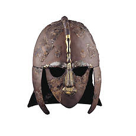

|  |
The Early Medieval Gallery The gallery traces the rise of Medieval Europe from its roots in the Late Antique world
of the 3rd and 4th centuries AD to about the year AD 1100. The
period is one of political change and tribal movement, leading
to the formation of new cultural blocs as medieval kingdoms were
formed and many peoples were gradually converted to Christianity.
Objects in this gallery range from every-day items to church treasures.
The displays illustrate the Anglo-Saxons from the early
5th cent AD to the Norman conquest; the Vikings in Scandinavia,
Britain and Ireland; the Celts in Britian and Ireland from the
5th to the 12th centuries; early Medieval Germanic peoples, eg
Goths, Franks, Lombards and Vandals, Steppe nomadic cultures,
and Slav and eastern Baltic tribes from the 4th to the 12th century.
The Department regularly lends material to special exhibitions
at the
Sutton Hoo Visitors Centre.
 floor map floor map
opening
hours
|